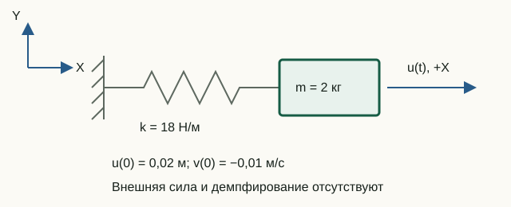

Метод средних ускорений
Переходный расчёт находит состояние системы на последовательных моментах времени. Текущая реализация МКЭ‑Ф рассматривает линейную упругую систему без демпфирования и применяет неявный метод Ньюмарка с β = 1/4 и γ = 1/2.
Уравнение движения и редукция
На свободных СС решается система:
Mff a(t) + Kff u(t) = Ff(t)
Это линейный недемпфированный частный случай более общего уравнения с матрицей демпфирования C и нелинейной восстанавливающей силой. В МКЭ‑Ф C = 0, нелинейного слагаемого нет, а закреплённые компоненты полных историй остаются точно нулевыми.
Единая временная сетка
При шаге Δt и запрошенной длительности T число шагов равно fix(T/dt). Все возвращаемые истории имеют N + 1 столбец:
t0 = 0, t1 = Δt, …, tN = NΔt
Если T/Δt нецелое, фактическая длительность result.duration меньше запрошенной result.requestedDuration. Номер столбца в Octave на единицу больше номера шага: столбец 1 соответствует t = 0.
Начальное состояние
Пользователь может задать полные векторы u0 и v0. Их закреплённые компоненты обязаны быть нулевыми. Начальное ускорение не задаётся независимо, а вычисляется из равновесия:
a0 = Mff−1[Ff(0) − Kffu0]
Так три начальные истории начинают расчёт из одного физически согласованного состояния.
Аппроксимации Ньюмарка
Перемещение и скорость на следующем шаге связываются с ускорениями:
un+1 = un + Δt vn + Δt2[(1/2 − β)an + βan+1]
vn+1 = vn + Δt[(1 − γ)an + γan+1]
Выбор β = 1/4, γ = 1/2 задаёт метод средних ускорений. Для линейной системы он имеет второй порядок точности и безусловно устойчив, но устойчивость не означает достаточную точность при слишком крупном Δt.
Эффективная жёсткость
В коде используются коэффициенты:
a0 = 1/(beta*dt^2);
a2 = 1/(beta*dt);
a3 = 1/(2*beta) - 1;На каждом шаге решается одна система:
Keff un+1 = Fn+1 + M(a0un + a2vn + a3an)
Keff = Kff + a0Mff
Матрица Keff постоянна, поэтому solveTransient один раз выполняет разложение Холецкого и повторно использует его на всех шагах. После решения обновляются ускорение и скорость.
Импульс на дискретной сетке
Нагрузка типа 12 ненулевая только в столбце t = Δt. Для прямоугольного одношагового импульса:
Idiscrete = F0Δt
Поэтому при сравнении сеток с разным Δt следует сохранять не амплитуду, а импульс: F0 = I/Δt. Иначе уточнение шага одновременно меняет физическое возбуждение и численную погрешность.
Сходимость и энергия
Для свободного недемпфированного осциллятора с ω = √(k/m):
u(t) = u0cos(ωt) + [v0/ω]sin(ωt)
Уменьшение Δt вдвое должно примерно в четыре раза уменьшать ошибку метода второго порядка. Это надёжнее одной проверки при одном шаге.
Полная механическая энергия свободной системы:
E(t) = 1/2 vTMv + 1/2 uTKu
Для линейной недемпфированной задачи метод средних ускорений не вносит алгоритмического затухания, и энергия сохраняется с точностью округления. При внешней нагрузке энергия меняется за счёт её работы, поэтому постоянство уже не является ожидаемым инвариантом.
Односторонний спектр
computeSingleSidedSpectrum применяет БПФ к каждой строке перемещений и возвращает неотрицательную половину частот. При Ns отсчётах:
Δf = 1/(NsΔt)
Спектральный пик свободного осциллятора должен находиться около его собственной частоты, но конечная длительность и несовпадение частоты с центром дискретного бина создают утечку. Поэтому разумная проверка учитывает разрешение Δf, а не требует побитового совпадения частот.
Как запустить расчёт и посмотреть результат
В Octave из корневого каталога проекта выполните:
addpath(pwd);
setup;
problem = StructFEProblem(fullfile( ...
'examples', 'cases', 'CaseBeam.txt'));
model = problem.GetAnalysisModel();
result = problem.RunTransient(1e-4, 1e-2, 3, 2);
options = struct(...
'title', 'Переходный отклик', ...
'lengthUnit', 'm', 'forceUnit', 'N', ...
'momentUnit', 'N*m', 'timeUnit', 's', ...
'transientFields', {{'displacements', 'velocities', ...
'accelerations', 'loadHistory', ...
'reactions', 'spectrum'}}, ...
'timeStride', 1, 'prettyPrint', true);
exportPostprocessorData(model, result, ...
fullfile('output', 'transient-history.json'), options);Из корня репозитория выполните docker compose up --build (либо docker-compose up --build) и откройте препроцессор. Загрузите examples/cases/CasePreprocessorTransient.txt через Open TXT и нажмите Run analysis. Интерфейс покажет очередь, время и журнал Octave, а затем автоматически откроет полную историю в постпроцессоре. Чтобы сохранить результат после остановки Compose, нажмите Download JSON.
Затем откройте postprocessor/index.html
двойным щелчком в Chrome и перетащите на страницу output/transient-history.json
или выберите его через Open JSON. Готовый пример находится в
examples/results/transient-history.json.
Локальный сервер не нужен.
Выберите узел, степень свободы и величину на графике. Ползунок времени и щелчок по графику показывают точный экспортированный отсчёт. Play запускает анимацию; Frame stride изменяет шаг просмотра. SVG и PNG сохраняют текущий кадр вместе с графиком и параметрами выбора.
Если при экспорте задать timeStride > 1, просмотрщик явно покажет, что история прорежена. Поле reactions хранит полный динамический остаток M*a + K*u - F; опорные реакции — его строки для закреплённых степеней свободы.
Лабораторная 06. Свободные колебания: точность метода Ньюмарка
Цель — сравнить численное движение с аналитическим и определить по трём сеткам порядок сходимости.

Исходные данные и обозначения
m = 2 кг, k = 18 Н/м, u₀ = 0,02 м, v₀ = −0,01 м/с. Сила и демпфирование равны нулю. Готовый пример рассчитывает три периода с 50, 100 и 200 шагами на период; β = 1/4, γ = 1/2.
До запуска: расчёт на бумаге
- Найдите ω = √(k/m), f = ω/(2π), T = 1/f и начальное ускорение a₀ = −ku₀/m.
- Запишите u(t) = u₀cos(ωt) + (v₀/ω)sin(ωt). Найдите начальную энергию E₀ = mv₀²/2 + ku₀²/2.
Запуск в Octave
Выполните из корня проекта. Готовая функция печатает результаты; для этой работы изменять её код не требуется.
addpath(pwd);
setup;
addpath(fullfile(pwd, "reference", "examples"));
r = example_06_newmark_sdof();Работа с результатами
- Сверьте
Natural frequency,periodиInitial accelerationс расчётом. - Из
Steps per period and maximum displacement errorвыпишите три ошибки. Рассчитайте отношения ошибки на 50 шагах к ошибке на 100 и на 100 к 200. Почему отношение около четырёх указывает на второй порядок? - Готовыми командами ниже постройте точное и численное движение на самой мелкой сетке, а затем их разность. Отдельный график разности позволяет увидеть погрешность при визуально совпадающих кривых.
- Сопоставьте
Relative energy driftс найденной погрешностью движения. Объясните, почему сохранение энергии ещё не означает точного совпадения фазы. - Сверьте
Spectrum peakс собственной частотой: расхождение должно укладываться в напечатаннуюbin width. По формуле Δf = 1/(NΔt) предскажите влияние сокращения длительности записи при прежнем шаге.
После запуска выполните в Octave с доступным графическим окном:
figure;
plot(r.time, r.displacements(1,:), "-", ...
r.time, r.exactDisplacement, "--");
xlabel("t [s]"); ylabel("u [m]");
legend("Newmark", "Exact"); grid on;
figure;
plot(r.time, r.displacements(1,:) - r.exactDisplacement);
xlabel("t [s]"); ylabel("u - u_exact [m]"); grid on;При безоконном запуске вместо графиков выпишите несколько пар значений и их разность:
idx = round(linspace(1, numel(r.time), 13));
disp([r.time(idx).', r.displacements(1,idx).', ...
r.exactDisplacement(idx).', ...
(r.displacements(1,idx) - r.exactDisplacement(idx)).']);ω = 3 рад/с, f ≈ 0,477465 Гц, T ≈ 2,0944 с, a₀ = −0,18 м/с², E₀ = 0,0037 Дж. Ошибка при уменьшении шага вдвое сокращается примерно в четыре раза; относительный дрейф энергии меньше 10⁻¹⁰. Более короткая запись увеличивает Δf и ухудшает частотное разрешение.
Что включить в отчёт
Ручной расчёт, таблицу ошибок и их отношений, два графика (или таблицу значений при безоконном запуске), объяснение различия между сохранением энергии и точностью движения, вывод о разрешении спектра.
Исходный код главы
solveTransient.m— метод средних ускорений и полные истории;buildTransientLoad.m— нагрузка на общей временной сетке;computeSingleSidedSpectrum.m— односторонний амплитудный спектр;example_06_newmark_sdof.m— аналитическое сравнение и сходимость.
Теория и история проекта
- Henri P. Gavin, Numerical Integration in Structural Dynamics, Duke University, редакция 21 июля 2025 года: раздел «The Newmark-β method — incremental formulation». Общие аппроксимации Ньюмарка приведены в формулах (22)–(23), а формулы (24)–(30) показывают инкрементальный вывод; в (27)–(30) конспект специализируется на β = 1/6. МКЭ‑Ф использует β = 1/4, линейный недемпфированный случай и полную запись перемещений.
- К.-Ю. Бате, Е. Л. Вилсон, Численные методы анализа и метод конечных элементов, перевод с английского издания 1976 года, Москва: Стройиздат, 1982, глава 8, с. 271.
- «МКЭ‑Ф — метод Ньюмарка» — историческое описание версии 0.4 от 2017 года; старые команды и численные результаты не являются документацией текущей реализации.
MPC
Newmark интегрирует независимые координаты с Kr, Mr и TᵀF(t). Перемещения, скорости и ускорения восстанавливаются через T. Начальные перемещения и скорости должны удовлетворять SPC и MPC; несовместные значения отклоняются. Динамические силы связей восстанавливаются из r = Ma + Ku − F.
Подробное описание MPC · JSON v3 · CaseMPCFrame.txt · CaseMPCTruss.txt